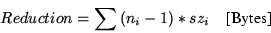

Thomas Gschwind
Manfred
Hauswirth
{tom,M.Hauswirth}@infosys.tuwien.ac.at
Distributed Systems Group
Technische Universität Wien
Argentinierstraße 8/E1841
A-1040 Wien, Austria, Europe
This work was presented at the 1999 USENIX Annual Technical Conference, June 6-11, 1999, Monterey, California, USA.
The NewsCache Homepage can be found at http://www.infosys.tuwien.ac.at/NewsCache/.
A Postscript version of this document can be found on our Technical Reports page.
Usenet News provides a global distributed blackboard on top of other networks. It consists of a set of hierarchical newsgroups which are dedicated to specific topics. Articles or messages are submitted (posted) to one or more newsgroups and are replicated to all Usenet sites holding one of the newsgroups the article was posted to [1]. The newsgroups that are stored on a news server and thus provided to its clients are defined by the news server's administrator.
The world-wide set of cooperating news servers makes up the distribution infrastructure of the News system. Articles are distributed among news servers using the Network News Transfer Protocol (NNTP) which is defined in RFC977 [2]. In recent years several extensions have been applied to NNTP. These are currently available as an Internet draft [3] which will supersede RFC977 within the next few months. The format of Usenet messages is defined in [4].
News readers provide the user interface for reading News and interact with their news server using the Network News Reader Protocol (NNRP). NNRP is actually the subset of NNTP that is used by news readers. Since the news reader stores data specific to each news server, such as article numbers to keep track of read articles, the user must always connect to the same news server to get a consistent view.
The number of newsgroups (currently about 550001)and users is growing steadily. At the infrastructure level this implies growing amounts of data that need to be distributed and pushes existing News infrastructure to its limits [5,6]. Section 2 gives an introduction to the current News infrastructure, its problems--which are mainly caused by the lack of scalability due to News's n copy semantics that causes high bandwidth and resource consumptions--and possible solution strategies.
A news server maintains a set of databases and log files to store and monitor the news spool which are central to the performance of the system as a whole. These databases are explained in Section 3 along with a comparison of the organization of these databases as implemented in various well-known news servers and NEWSCACHE itself.
In Section 4 we present the design and implementation of NEWSCACHE. We explain the replacement strategy used for NEWSCACHE based on an analysis of various replacement strategies that can be used for a caching news server. Besides caching, our NEWSCACHE provides additional and new features which are described in Section 5. Section 6 evaluates our implementation and Section 7 gives an outlook on future work.
Related work is considered in Section 8 followed by our conclusions in Section 9.
When a user posts an article to a newsgroup, the news reader transfers it to its news server via NNRP. Then the article is distributed among the news servers using the Network News Transfer Protocol (NNTP) [2,3]. The news server keeps a copy of the article and forwards (feeds) it to its ``neighboring'' news servers that also hold the newsgroup that the article has been posted to. Those servers in turn forward it to their neighbors until all news servers that hold the newsgroup have received a copy of the article.
No restrictions exist on the topology with which articles are distributed among the news servers. To prevent duplicate delivery of the article two strategies are applied: each article carries a unique message identifier that allows a news server to identify whether it has already seen an article; additionally a news server adds its own name to the path header of every article it receives. This allows a news server to identify which news servers already have seen this article and feeding to those is not necessary [7].
This simple infrastructure of News has provided flexible and reliable service over the past years. The analysis of logfiles of large news servers, however, shows a doubling of article numbers nearly every 18 months by occasional bursts of growth [5]. In the current infrastructure these figures can easily be mapped onto network bandwidth requirements which are likely to grow at a similar rate.
A main scalability problem stems from News's n copy distribution semantics. As described above each article is copied to every news server holding the relevant newsgroup(s). Since a high percentage of the articles will not be read by anyone, copying all articles is highly redundant for a leaf node news server. Measurements at our university's news server have shown that only 20% of all available newsgroups are actually read [8].
Currently a typical newsfeed requires the transfer of about 3-5GB of article data per day [6]. For a typical site connected to the Internet via a T1 link (1.5 MBit/s) News's bandwidth requirements account for up to 35% of the total available bandwidth. This is the lower bound to guarantee news distribution without generating a backlog. A backlog might not be recoverable due to limited bandwidth and computing resources. If this occurs, the news service has to be decreased in terms of fewer available newsgroups and randomly unavailable articles.
Another problem that has to be accounted for is the I/O load on the news server caused by the news traffic [9]. To illustrate this, consider our university's hardware requirements for News: news.tuwien.ac.at is an UltraSPARC 2 system with 2 168MHz CPUs, 512MB main memory and uses highly-optimized NFS server hardware for the spool-directory, i.e. a 100GB RAID4 file server with a file system (WAFL) highly optimized for directory accesses and big directories, connected via 100MBit FDDI to the UltraSPARC. Even with this machine the number of newsgroups provided had to be cut down from about 45000 to 6000 newsgroups. Users can request additional newsgroups (from a total of 55000 groups at the moment) via a WWW page [8].
News servers are responsible for both article distribution and providing news service to their clients. Additional hardware requirements may be imposed by a high number of news clients. An architecture that separates these two functionalities into a distribution backbone and an access infrastructure would provide higher flexibility and scalability. This separation can be implemented by administrative and management measures [6] or by a new News infrastructure. In [10] we compared infrastructures for News and came to the following conclusions:
NEWSCACHE is a cache server implementation intended to access the News infrastructure. Since it only uses NNRP, it fits seamlessly into the existing infrastructure without requiring modifications to existing software. Each requested article is stored locally by NEWSCACHE to satisfy successive requests without having to contact the news server again. This eliminates additional transfers, thus conserving bandwidth; decreases load on the news server; and reduces disk space requirements since only articles that actually are accessed need to be stored. Given ni is the number of accesses and szi is the size of article i the reduction in bytes can be approximated as

This formula represents only the upper bound. An article that has been replaced by another will have to be requested again, if it is again by a user.
Caching is ideally applicable for News because of the lack of updates: articles do not change over time; they can only be added to a newsgroup or expire. This simplifies the application of caching considerably.
Each news server maintains a set of databases that store articles and newsgroups as well as meta-information. In the following sections we will explain the purpose of each database, how they are implemented by various news servers, and the improvements NEWSCACHE offers for each database. We looked at important and wide-spread news server implementations, such as the NNTP reference implementation [12], c-news [13] which is historically important and still has a large number of users, and INN [7] [14] which is the news server with the most installations nowadays. We have also included NNTPCACHE's organization of the news database [15]--another cache server for News that was developed in parallel with NEWSCACHE.
The active database stores a list of all the newsgroups available on the news server along with the number of the first article (low watermark), the number of the last article (high watermark), a posting flag, which indicates the type of the newsgroup, and the creation times of a newsgroup. Articles are numbered sequentially within a newsgroup. Articles posted to different newsgroups, will have several article numbers (one for each newsgroup). The article number is site-specific, depending on the arrival order and must never be reused within a newsgroup.
For the news server, the active database is necessary to calculate the article number(s) of newly arriving articles within their newsgroup(s). For the news reader, it provides an overview of the newsgroups available from the news server, the date the newsgroup has been created, and allows the news reader to estimate the total number of articles (total=hi_watermark-lo_watermark+1) and the number of unread articles (articles_unread=total-articles_read) within each newsgroup.
Traditionally the active database is stored in two files (active and active.times). One listing the watermarks and the moderation status and the other one giving the creation time of the newsgroups (c-news, INN, NNTP reference implementation).
NEWSCACHE, however, stores all this information in one memory mapped database including the number of articles available in each newsgroup and a timestamp when a newsgroup has been requested the last time from the news server.
An advantage of storing the number of articles within the active database is that articles need not be counted whenever a newsgroup is selected while still being able to provide an accurate count of the articles present in the newsgroup.
NEWSCACHE uses timestamps to synchronize with its upstream news server. A configurable threshold value controls the frequency of cache updates (consistency checks) from the server. This is a trade-off between cache coherence and bandwidth/connections to the server. A time interval of 0 for the update period of the database provides a fully coherent view of the database at the cost of increased connections (bandwidth). A bigger value means that articles will be available to cache users with a slight delay.
As far as we could find out, NNTPCACHE organizes its active database similar to NEWSCACHE. All the information is kept in one memory mapped file.
The article and newsgroup database stores all the news articles and maps the articles to the newsgroups which they have been posted to. Traditionally the newsgroup hierarchy is mapped onto a directory hierarchy and the articles are stored in separate files in their newsgroup directory. If an article is posted to several groups hard links are used to prevent multiple storing of an article (c-news, NNTP reference implementation, NNTPCACHE). INN uses the same format but is able to use soft links which allows distribution of the News spool over multiple file systems.
However, this approach has some drawbacks due to the fact that the average size of an article is rather small (about 2.5KB) [5,6].
To overcome the problems of this storage format, the current version of INN supports two alternatives: the timehash format is similar to the traditional format, but articles are divided into subdirectories based on the arrival timestamp. The cnfs format uses pre-configured buffer files of a configurable size for every newsgroup. Upon reaching the end of the buffer file, new articles are stored again from the beginning of the file. However, the disadvantage of this approach is that the article retention time cannot be controlled since articles get overwritten automatically when the buffer is full. The installation manual recommends to use the traditional format. Only if a full feed has to be maintained, cnfs is recommended. [14]
Even though cnfs seems to be the best choice from a performance point of view, it cannot be used for a cache server because the size of the buffer files is fixed and available file system space cannot be flexibly reallocated between different newsgroups. Another disadvantage is that the article retention time cannot be controlled which is important for caching.
NEWSCACHE in contrast uses a database for each newsgroup that stores articles with a size of less than 16KB. Larger articles are stored in the filesystem to keep the newsgroup database small and to improve the database's caching behavior. The article size threshold is user-configurable and should be chosen in a way to utilize the filesystem's block allocation as efficient as possible (most filesystems allocate disk space in chunks of 2nKB, where n is constant).
The advantage of our approach is that it does not suffer from a limited number of files and the filesystem lookup is required for big articles (articles bigger than 16KB) only. However, newsgroups with many large articles still depend on the filesystem's organization.
Since an article's unique message identifiers and the per newsgroup article numbers must not be reused for other articles, the article itself has a virtually infinite lifetime. Thus the article itself cannot be changed and thus no coherency control messages are necessary which makes the caching of articles efficient and easy.
When an article is submitted to or expired from a newsgroup the low and high watermarks of the newsgroup will change accordingly. This can be easily identified using NNTP's group command which selects a newsgroup and reports the newsgroup's watermarks.
However, articles can be added to or removed from a newsgroup not only by submission or expiration but also via cancellation messages or by article reinstatement [3,2]. While the former can be done by every Usenet user, the latter can only be done by the news server's administrator. Failing to detect article cancellation is only a minor flaw but failing to detect article reinstatement has the effect that the user might miss these articles. Reinstatement of an article conforms to RFC977 [2] but since it occurs seldomly only few news readers handle it correctly. Most news readers mark articles not available on the news server as read which might not be the case (i.e., tin, xrn, slrn, MS Outlook Express).
NEWSCACHE uses the listgroup command to obtain a list of all valid article numbers within the current newsgroup. Based on this list NEWSCACHE can identify a canceled article (the article exists in the cache but not on the server) or a reinstated article (the article exists on the server but not in the cache).
The overview database stores a short summary for each article. Using the overview database, a news reader can provide a faster overview of the articles available in a newsgroup.
INN stores the overview database for each newsgroup as a single plain text file. Whenever an article is posted to a newsgroup, its overview record is appended to this file. If an article gets deleted or is expired in the newsgroup, the whole file has to be rewritten.
NNTPCACHE takes the same approach except that the overview records for one group are split up into several files with 512 overview records per file. This is necessary since otherwise the whole overview database would have to be rewritten when a new record has to be inserted at the beginning of the file. This occurs frequently because NNTPCACHE has no control of when a client requests an overview record. Some news readers even request the overview records in reverse order, to be able to present the newest articles first to the user while older records are being retrieved (e.g., netscape). NNTPCACHE generates overview records on the fly if an article is not available and stores them in the overview database.
NEWSCACHE always generates overview records for articles stored within the newsgroup's memory mapped database on the fly. Overview records for other articles (articles that have not been cached yet or articles bigger than 16KB) are also stored in the newsgroup's database. This reduces the disk space necessary for NEWSCACHE by approximately 20%. Additionally, the overview database has its own memory allocation methods based on memory mapped files to allow changes without the need to rewrite the entire file.
A record in the overview database represents a subset of the corresponding article. Thus the same requirements as for the article database account for the overview database. When a news reader requests an overview record for a newsgroup, NEWSCACHE immediately prefetches all entries not yet cached since it is the most frequently used information. Most news readers will retrieve the overview database of the whole newsgroup whenever the newsgroup is selected by the user (e.g., tin, xrn)
The history database stores meta information about articles and newsgroups. It stores the arrival time and expiration of an article along with its message identifier. This allows the news server to identify whether an article is offered again by another news server but has already been expired on the local server. It stores the creation and deletion time of newsgroups. The creation time is necessary to be able to inform news readers of newly created newsgroups.
Usually, the history database is managed like a log file (c-news, INN), where new entries are appended at the end of the file. NEWSCACHE stores the creation times of the newsgroups within its active database. Storing the articles' message identifier is not necessary because NEWSCACHE does not participate in the distribution of articles between news servers. It provides an exact image of its upstream news server, thus freeing NEWSCACHE from having to identify duplicate articles.
NEWSCACHE has been designed to be easily extendible and reusable. For this purpose we implemented a news server class library that provides an interface to different kinds of news databases. The hierarchy is shown in Figure 1 using the notation presented in [16].
The abstract news server class (NServer) defines the interface that has to be implemented by all the news server classes and provides a factory method (getgroup()) that lets the user create the news server's news database.
The local server class (LServer) implements an interface to a local news database. This class can serve as a base class for the implementation of a news server trimmed to the user's requirements. The remote server class (RServer) implements an interface to access a database provided by a news server. It also allows for multiplexing between different news servers on a per newsgroup basis. The RServer class can be used as the communication interface to a news server for a new news reader. The cache server class (CServer) inherits the functionality from the LServer and the RServer classes. As a result, CServer provides an interface to the database of a news server with the ability to cache messages in the news database provided by the LServer class.
Each news database is defined by its own interface (inherited from an abstract class). The access to the databases is controlled by the news server classes which means that a reference to the newsgroup databases has to be requested from the server component before a user (for NEWSCACHE this is the nnrpd class that handles client requests) of the library can access the newsgroup.
For the databases used by the LServer and CServer classes, we implemented a Non Volatile Container class library. Instead of using the heap for memory allocation, the class library provides its own functions for allocating and freeing memory by using memory mapped files. Using this memory allocation model we implemented a set of containers. NVcontainer provides all the methods necessary for allocating and freeing memory from the mapped file. This functionality is inherited by all the subclasses of NVcontainer. At the moment we provide a list container (NVList), an externally linked hash table (NVHash), and an array (NVArray). Figure 2 shows the hierarchy of this library.
Using memory mapped files has several advantages. The size of the database is not limited by the available virtual memory. A container's content need not be written to or read from the disk explicitly. If the operating system caches file accesses, this approach has no performance penalty over the use of main memory. No swap space is consumed by this container class, since the cached data will be written back to the file instead of to the operating system's swap space. If the database should be shared by a set of processes, changes are visible to other processes immediately and no shared memory has to be allocated. However, memory mapped files also have a drawback: whenever more memory is necessary than available, the file has to be resized and remapped to a possibly different memory location. To reduce the performance penalty of this operation we allocate space in bigger chunks (64KB at the moment).
For our implementation of the active database, we use the NVHash container. We use a externally linked hash table because it is not as complex as a balanced tree and more efficient as long as the number of elements is predictable. Since the number of elements can be estimated a priori for the next few years this is not a big issue. Currently about 55000 newsgroups exist and up to now this number doubles every 18 months. Thus a hashtable with about 20000 entries will be sufficient for the next two years (about 120000 newsgroups divided by 20000 entries gives between 1 and 6 comparisons per lookup). Then the size of the hash table should be reconfigured which takes only a few seconds. Our implementation stores all information of the active database within the same database.
For the newsgroup database, each newsgroup uses its own database to store news articles. Each database is stored within its own directory. The name of the directory is derived from the name of the newsgroup (similar to INN).
Compared to other implementations, we provide a sophisticated newsgroup database. Only big articles (articles bigger than 16KB at the moment) are stored using a separate file. All other information, be it a small article or an overview record, are stored in the same database. This reduces the number of files and keeps related information together and thus improves caching behavior. To further reduce disk-space requirements we went one step beyond and store overview records only for articles that are stored externally or for articles where only the overview record has been requested. This performance penalty (about 20% as we will show in Section 6) is outweighed by the disk space reduction, since the overview database is up to 20% of the size of the news database.
A key determinant of the performance of cache systems is the replacement strategy. We have compared the replacement strategies applicable to our domain in terms of the resulting network bandwidth and in their hit rates respectively. Where meaningful, the replacement strategies were compared on a per article basis and on a per newsgroup basis (the smallest unit to be removed is an article or a newsgroup respectively). For the per newsgroup replacement strategies it is important to note that articles will also be removed when they are expired on the upstream news server. Otherwise the newsgroup will grow infinitely. A comparison of the strategies is depicted in Figure 3 in terms of consumed network bandwidth and in Figure 4 in terms of their hit rates. The replacement strategies have been simulated using access patterns obtained from NEWSCACHE's log files (logged over a 10 days period).
It is interesting to note that a better hit rate does not necessarily imply less network bandwidth consumption. For instance biggest article first has nearly always a better hit rate than least frequently used but in some situations transfers more bytes from its upstream news server.
What we did not expect was that LRU on a per newsgroup basis (LRUG) performs better than LRU on a per article basis (LRUA). We assumed that LRUA has a finer granularity and thus will perform better. Our interpretation is that the newsgroup should be seen as a unit and that an article's access probability often can be estimated better by looking at all the articles in the group than by just looking at one article. Sometimes this generalization is not true and the hit rate can degrade even though the spool size is increased.
We considered the following replacement strategies:
Initially we used a per newsgroup replacement strategy because it was the easiest way to implement article replacement and imposed the smallest CPU load. Then we tested a hybrid replacement strategy (LRUA and LRUG mix) because we assumed that a per article replacement strategy would perform better. This did not prove true so we have gone back to LRUG.
NEWSCACHE's design rationale is compatibility, scalability, and extendibility. Compatibility with the existing infrastructure and scalability issues already have been addressed in previous sections. By extendibility we mean that we have included new functionality into NEWSCACHE and its design eases the addition of new features.
Many news readers can interact with only one news server, thus tying the user to the server's newsgroup selection. NEWSCACHE can remedy this situation by its transparent multiplexing functionality: it can simultaneously cooperate with a set of news servers and combines them into one virtual news server for its clients. This feature can also be utilized for infrastructural improvements: newsgroups can be partitioned among a set of news servers and access is done via NEWSCACHE. Done at an appropriate organizational scale, this can decrease network bandwidth consumption and I/O load on the news servers, while users still have access to all newsgroups.
Additionally the multiplexing feature can be used for the provision of local newsgroups. NEWSCACHE can be setup to multiplex between the newsfeed and a local news server that only holds groups of local scope. Since this functionality requires setting up a local news server whose functionalities are not exploited in this setting, we plan to include a light-weight news server into NEWSCACHE for this purpose.
NEWSCACHE also supports access to a virtual full newsfeed over limited bandwidth network connections. This functionality can be combined with a prefetching strategy: a set of newsgroups can be retrieved in off-hours when the network is less loaded and then will be accessible much faster during network peak time. This functionality can also be bestowed to provide offline news reading. By using the prefetching functionality newsgroups are in the cache and can then be read offline. Postings submitted during offline operation are queued for later submission. However, during offline operation, NEWSCACHE cannot retrieve articles that have not been cached. Thus, those articles cannot be presented to the news reader. Unfortunately, many news readers assume then that the article has been deleted and marks it as read and will never present it to the user even if the article is reinstated by NEWSCACHE when a connection to the upstream news server is re-established.
After developing and implementing NEWSCACHE we evaluated the success of our design decisions and the validity of our assumptions about the weaknesses of the other server's database organization. We performed the evaluation in several experimental setups. In the following we will present our results that validate our design decisions. As we will show, however, the results also indicate that a small performance increase might still be possible.
| ||||||||||||||||||||||||||||||||||||
Table 1 shows the performance of NEWSCACHE's News database compared to NNTPCACHE's and INN-2.0's performance. Our test machine was a Pentium 200MHz, 64MB main memory, and 3GB IDE hard disk running Linux 2.0.35. The cache servers and INN were running on the same machine since we wanted to know the minimal latency involved when retrieving News via each cache server. It shows that a miss imposes only little overhead and in the case of a hit NEWSCACHE performs better than its competitors except for the retrieval of the active and overview databases where it performs as good as NNTPCACHE.
Table 2 compares the delay of hits, misses, and direct connections in a realistic setup. Clients are located on the same LAN as NEWSCACHE. The LAN is connected to the news server over a small bandwidth link (i.e., 56kBit modem line). Table 3 includes a rough calculation of the performance advantage that will be experienced by users that use NEWSCACHE by combining the figures in found Table 2 and 3.
| ||||||||||||||||||||||||
Another interesting thing to note is that the delay of some operations are masked out compared to Table 1 (i.e., on the fly generation of the overview database) due to the fact that the client and NEWSCACHE are running on different machines. Other operations do not profit from this. We see this as an indication that retrieving the active database from the server and sending it to the client can be optimized by interleaving those operations in a better way.
For a cache not only good performance values but also good hit rates are viable. Thus, we publicly announced the availability of NEWSCACHE at our university and asked people to use and test NEWSCACHE. The hit rates for this experiment are presented in Table 3. With more accesses to the cache we expect higher hit rates, especially when people have to use NEWSCACHE and cannot access the news server directly. Over a period of 10 days NEWSCACHE was accessed 6350 times from 309 hosts. In total 1314 different newsgroups were accessed among which the top 10 accounted for 59% of all accesses. So, reasonable locality in references to the newsgroups can be concluded.
NEWSCACHE has been tested in combination with several news readers.
Netscape works perfectly with NEWSCACHE, but we had to optimize the
group command, since Netscape issues this command for each
newsgroup to get a better estimation of the number of articles
available within the newsgroups. Gnus, knews, MS Outlook Express,
pine, slrn, tin, XRN also work in combination with NEWSCACHE. Other news
readers have also been reported to work perfectly in combination with
NEWSCACHE.
The following news servers have been tested in combination with NEWSCACHE: ANU News (VMS), INN, MS Internet Services, Netscape Collabra. No problem has been found so far.
The active database changes whenever an article is submitted to a newsgroup or whenever a newsgroup is added or removed. Article submission and removal occurs much more frequently than newsgroup addition or removal. Unfortunately NNTP provides no command to check which entries of the active database have been modified since a given time. Only commands for retrieving the whole active database (list active [wildmat]) or only the part for newly added newsgroups (newgroups) exist. A wildmat expression can be applied to filter newsgroups based on their names. Thus whenever the active database needs to be updated the whole active database has to be requested (about 2MB).
Fortunately, the revised NNTP specification [3] is kept extendible enough to support custom extensions. Extensions supported by the news server can be retrieved using NNTP's LIST EXTENSIONS command. To overcome this problem we propose a slightly modified list command, list active.modtime $time [wildmat], that provides a possibility to retrieve entries that have been changed since a given time. We will analyze the benefits of such a command and prepare a draft for an NNTP extension that defines this command.
The current implementation of our Non Volatile Container Class library is based on a code inheritance hierarchy. Even though this supports the changing of the type of container used during runtime it requires a virtual method call whenever the container is accessed. In future versions we will switch to a design based on templates similar to the design of STL [17].
At the moment the size of the hash table for the active database has to be specified when compiling NEWSCACHE. This should be a configuration option in NEWSCACHE's configuration file. However, this is not critical and adding this feature should be trivial.
We think that one of the key elements responsible for the good performance of NEWSCACHE is the Non Volatile Container Class library. In the future we will try to integrate this in INN and will evaluate whether INN can benefit from it.
We plan further analysis and experiments with cache replacement policies to find an optimal replacement policy for News. As our experiments have shown so far the application of such policies in the setting of News may yield unexpected results (see Section 4.1) and thus require further systematic study. News seems to differ from other cache application areas in a way that assumptions from other domains cannot be mapped 1:1 onto News.
Our measurements for News clients performance gains have been done indirectly via cache hit rates. While this provides a good approximation for the overall performance gains, it gives only a limited assessment of the performance gains for a single client. We want to use instrumented news readers to get such direct measurements. Additionally these results can be related to hit rates and other performance figures to get a better understanding of the runtime behavior and access profiles.
The selection process of the articles to be prefetched is another area of further investigation, i.e. how the information that is to be prefetched is chosen. Several scenarios seem to be useful besides prefetching based on the administrator's preferences: prefetch the newsgroups with the most user requests (in relation to the article sizes), thread based prefetching, etc.
NNTPCACHE is the only system we found so far that is similar to NEWSCACHE, but no publications about it are available. The following statements are solely based on the documentation of NNTPCACHE's software distribution [15] and our tests with it.
NNTPCACHE offers censoring of articles, and forwarding of unknown commands. NEWSCACHE currently does not support these features but on the other hand offers functionality unknown to NNTPCACHE: prefetching, offline News reading, and inetd support.
An approach using a server with only a subset of the theoretically available newsgroups in combination with a web page where users can request the addition of new newsgroups available on the news server's news feed is explained in [8]. When a user requests a newsgroup via the web page it is supplied by the news server on the next day. The author explains that in average only 20% of all the theoretically available newsgroups are actively being read. However, this could be solved better using a cache server. This approach has the advantage that news users need not request new newsgroups via a web page since the cache server would offer all available newsgroups and the newsgroups would be available to the news user immediately.
Another approach where the News spool is partitioned among several computers is presented in [6]. While this cuts down the I/O load on each machine it does not target the network bandwidth consumption.
Despite the fact that consensus exists that caching must be applied to News in the presence of overloaded networks, only few approaches exist to attack this problem. These approaches alleviate the effects by applying management policies but do not attack the cause. NEWSCACHE, however, attacks this at the access infrastructure while still being compatible to existing news software.
NEWSCACHE can replace existing leaf node news servers thus reducing network bandwidth consumptions and reducing hardware requirements for the provision of Usenet News since only a fraction of the full News spool has to be stored while still providing a full feed to news users. NEWSCACHE can be used to speed up retrieval of News in environments where only a slow link to the news server exists. Another advantage of NEWSCACHE is that it offers news reading functionality only (postings are directly forwarded to the upstream news server) and needs not allocate resources and computing power for news distribution. This drastically cuts down on I/O load.
Even though NEWSCACHE is based on an object-oriented design whose design is not compromised by dirty performance hacks, it provides faster access to news articles than other state of the art news servers (i.e. INN). This is due to the fact that we did a thorough comparison of the design of the news database in various other news servers before implementing our own database.
The news database is based on memory mapped files using our own memory management. This approach allows us to manipulate persistent complex data structures as if they were stored on the heap. Other news servers such as INN might also benefit from this organization.
Another factor that has to be taken into account in the domain of caching is the replacement strategy used when the cache space fills up. We have compared different replacement strategies that can be employed when the spool size of the cache server fills up along with an analysis of the advantages of each. One surprising result was that when articles need to be replaced, it is better to remove older articles on a per newsgroup basis. Our interpretation to this is that the probability that an article might be accessed can be estimated better by looking at all the articles in the group than by just looking at one article.
Additionally, NEWSCACHE makes the life of Usenet administrators easier by providing the following new features without forcing the administrator to install a news server with a full newsfeed: provision of local newsgroups, transparent merging of multiple news servers into one virtual news server, and providing a virtual full feed over slow links where a full feed would not be possible.
These factors should make NEWSCACHE popular in the future. An increasing number of people already use NEWSCACHE including Internet service providers and NEWSCACHE is included in the Debian Linux distribution.
Thanks to Mehdi Jazayeri for encouraging us to continue this work and Michael Gschwind for his help in the preparation of this article and his comments on earlier drafts.
NEWSCACHE is available under the terms of the GNU Public License (GPL)
from
http://www.infosys.tuwien.ac.at/NewsCache/.
Additionally, you can also test the current NEWSCACHE release by pointing
your newsreader to the news server
newscache.infosys.tuwien.ac.at on the standard NNTP
port (119). NEWSCACHE is also distributed as a part of the Debian Linux
distribution.